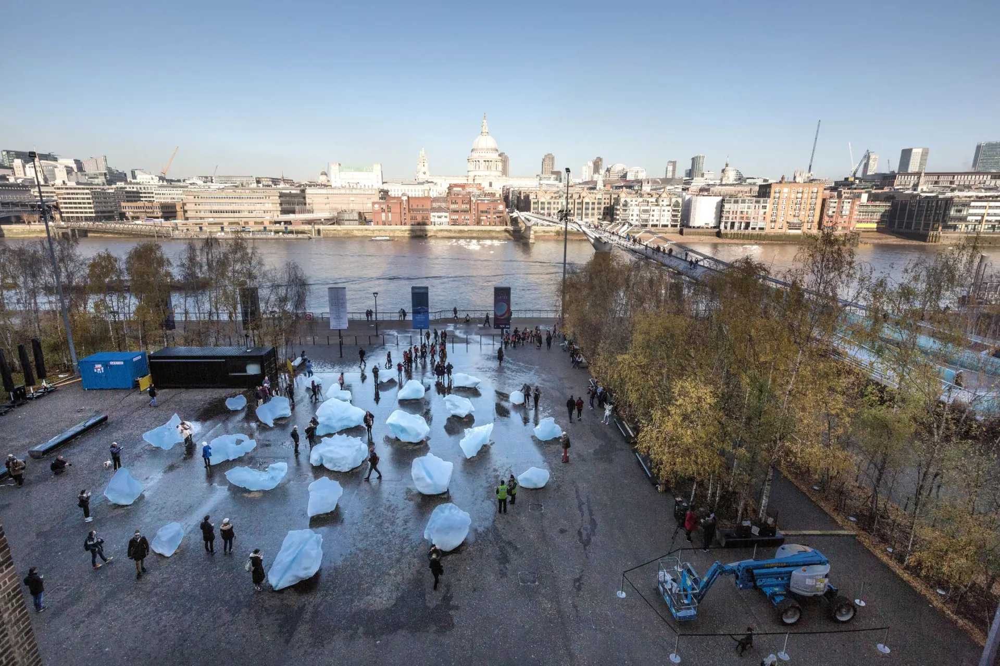
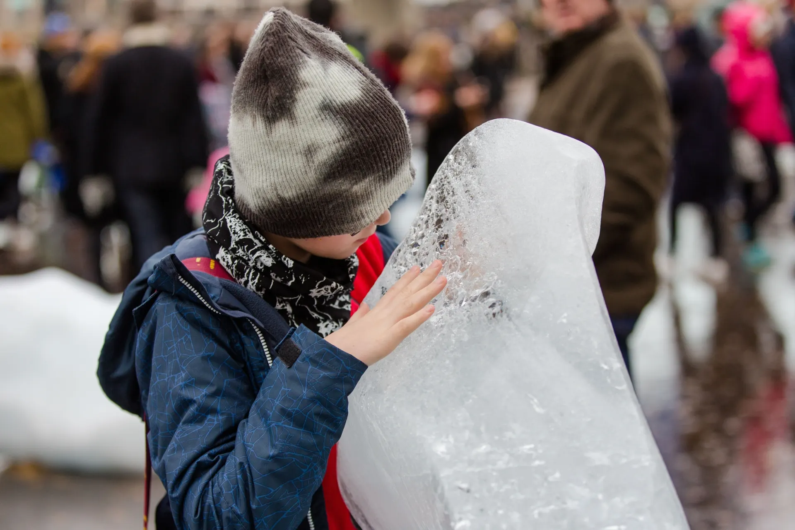
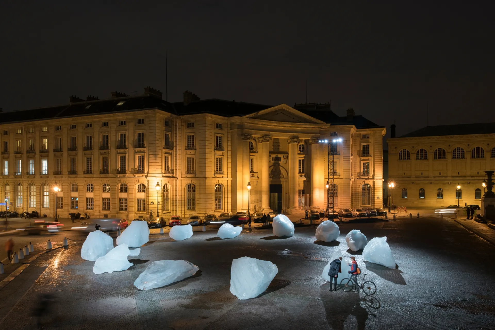
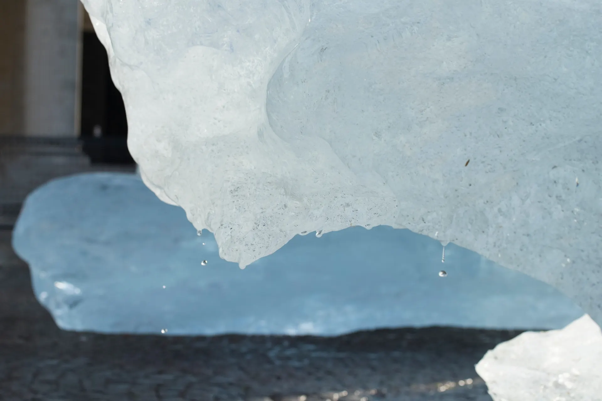
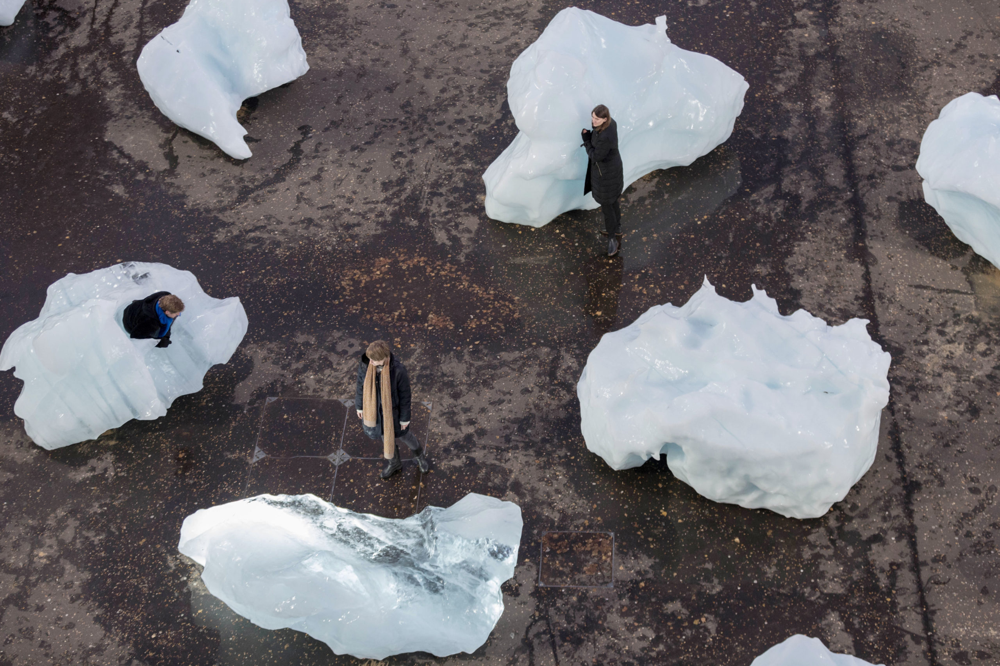

Images
Ice Watch






Compare
Comparing two different ways of making climate crisis public: the abstract urgency of a countdown and the physical presence of melting ice.
Artwork
Ice Watch is a public art installation by Olafur Eliasson, created with geologist Minik Rosing, in which large blocks of glacial ice are placed in an urban public space and left to melt in front of viewers. Instead of representing climate crisis through numbers or statistics, the installation brings part of the Arctic directly into the city. People can see the ice, touch it, listen to it crack, and watch it disappear over time.
Its impact is very different from data-driven climate communication. The melting ice makes climate change feel immediate, physical, and intimate. It creates a sensory encounter rather than an abstract one. Rather than asking people to interpret a number, it allows them to experience loss unfolding in real time.
Images





Impact
The power of Ice Watch comes from its material presence. It does not simply inform people that climate change is happening; it stages climate change as something visible, temporary, and disappearing. The ice melts regardless of what viewers say about it, which creates a strong sense of fragility and loss. This kind of encounter can provoke empathy more directly because people do not have to translate scientific data into feeling first. The meaning is carried by the physical object itself.
Contrast
In contrast to the Climate Clock in Union Square—where a mere countdown timer might struggle to evoke empathy—the experience is entirely different when a floating glacier fragment appears before people’s eyes and gradually melts away. The Climate Clock depends on interpretation: viewers have to understand what the countdown means, why it matters, and how it connects to their lives. Ice Watch, however, communicates through direct sensory experience. It transforms climate crisis from an abstract numerical warning into a visible and emotional encounter with disappearance itself.
This comparison helps clarify one of the central questions of my project. If the Climate Clock turns climate crisis into a number, Ice Watch turns it into a material event. One asks viewers to read urgency; the other asks them to witness loss. The difference suggests that public climate communication may become more powerful when data is connected to objects, feelings, and embodied experience. Relying solely on numbers to convey a sense of urgency regarding climate change to the public appears far from sufficient—and indeed, lacks immediacy. I believe that only through a combination of data and emotional impact can the public truly grasp the urgency of climate change.